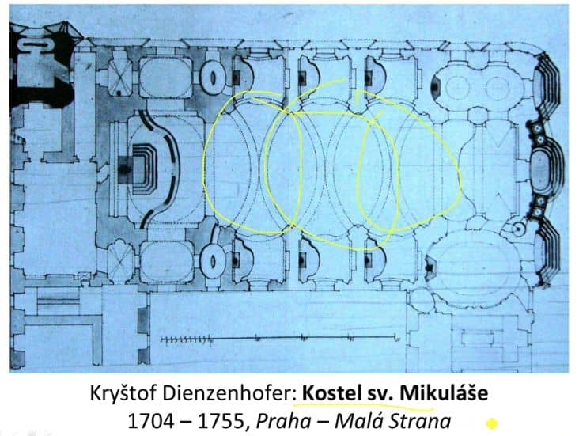

13. Barokní umění a rokoko v českých zemích
Chronologie
-
1620 - 1680 RANÁ
-
BÍLÁ HORA - 1620
- 30 letá válka
-
důležitá kvůli velkému zasažení Českých zemí
(válka zde začíná i končí)
-
PROTIREFORMACE
-
Jezuité se snaží převrátit
obyvatelstvo na katolickou víru
- MARIÁNSKÁ SLOUP
-
1680 - 1740 VRCHOLNÁ
-
1740 - 1780 ROKOKO (POZDNÍ)
Architektura
- IL GESÚ (viz otázka 12)
- KONVEX KONKÁVNÍ KŘIVKA (viz otázka 12)
- PRŮNIKY OVÁLŮ (viz otázka 12)
-
SMIŘICE NEBO KOSTEL SV. MIKULÁŠE NA MALÉ STRANĚ (ovály,
konvexkonkávní křivka)

-
JAN SANTINI
- hvězdy připomínající gotická žebra
-
KOSTEL SV. JANA NEPOMUCKÉHO NA ZELENÉ HOŘE U ŽĎÁRU
NAD SÁZAVOU
-
tvar jazyka → mysleli si že to byl jediný
ostatek po J. Nepomuckém (nakonec to byl
kousek mozku)
-
častá PĚTICÍPÁ HVĚZDA (půdorys i uvnitř) →
symbol Jana Nepomuckého, hvězdy kolem
hlavy po vhození do Vltavy (5 hvězd) a
také symbol Panny Marie
-
okna ve tvaru jazyka (symbol Jana
Nepomuckého)
- práce se světlem
Malířství
-
portréty
-
monumentálnosti
- velké rozměry (velká plátna)
-
pastózní rukopis
-
Karel Škréta
-
působil v Itálii vliv Caravaggia (diagonály,
chiaroscuro)
-
Vrcholné baroko
-
Petr Brandl
- chiaroscuro, pastózní rukopis
Sochařství
-
IN AREA
- diagonály
- rozpažení
- emoce
- vlající draperie
-
kontrast mezi tmou a světlem (lesknutí - matnost)
- postavy se dívají nahoru
-
mramor byl drahý = používá se spíše pískovec nebo
dřevo
- sochy byly původně polychromovány (barevné)
-
M. B. Braun
- drapérie
- Kuks (ctnosti a neřesti)
-
F. M. Brokoff
- mohutné svalstvo
-
zájem o odlišnou fyziognomii (Indiáni,
černoši)
- sousoší na Karlově mostě
-
SLOUPY
-
MARIÁNSKÉ SLOUPY
- na jejím vrcholu je Panna Marie
-
TROJIČNÍ SLOUPY
-
Svatá trojice - Bůh Otec, Syn a Duch Svatý
Obrázky
-
KOSTEL
- OVÁL, KONVEX KONKÁVNÍ KŘIVKY
-
JAN NEPOMUCKÝ
-
KROMĚŘÍŽ
- FRANC. PARK → GEOMETRIZOVANÉ ALEJE
-
SPRAVEDLNOST
-
SIMEÓN
-
DIAGONÁLA, CHIAROSCURO, SVĚTLO JDE Z JEŽÍŠE,
pastózní rukopis
Audio